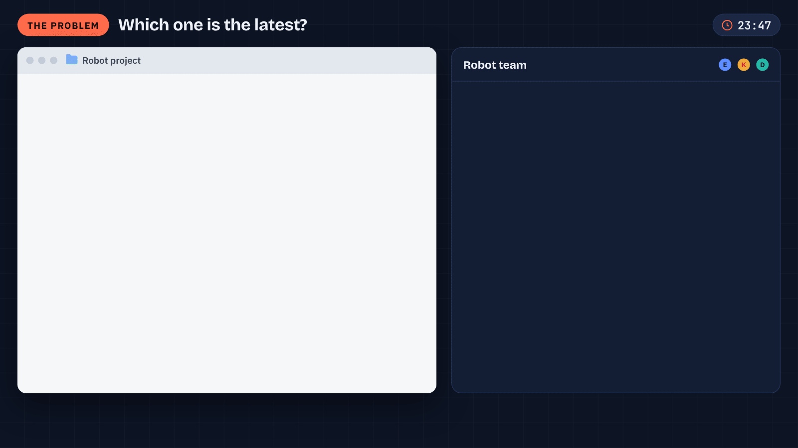
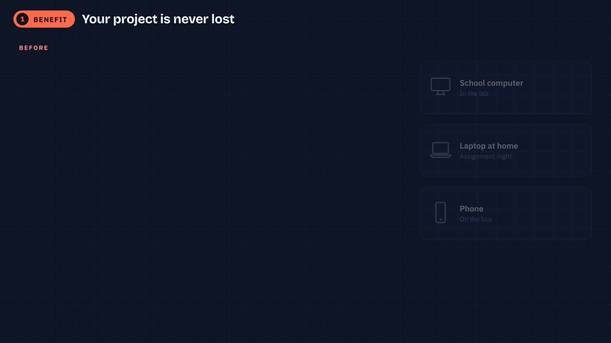
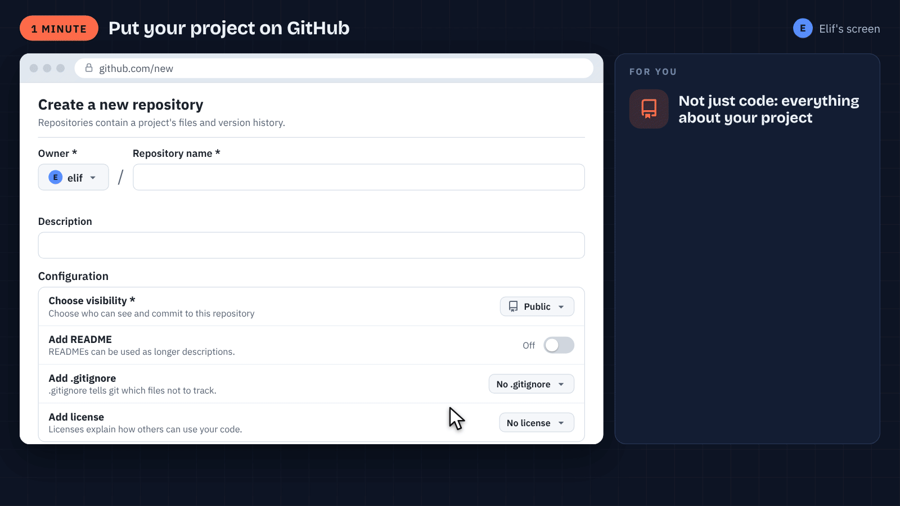
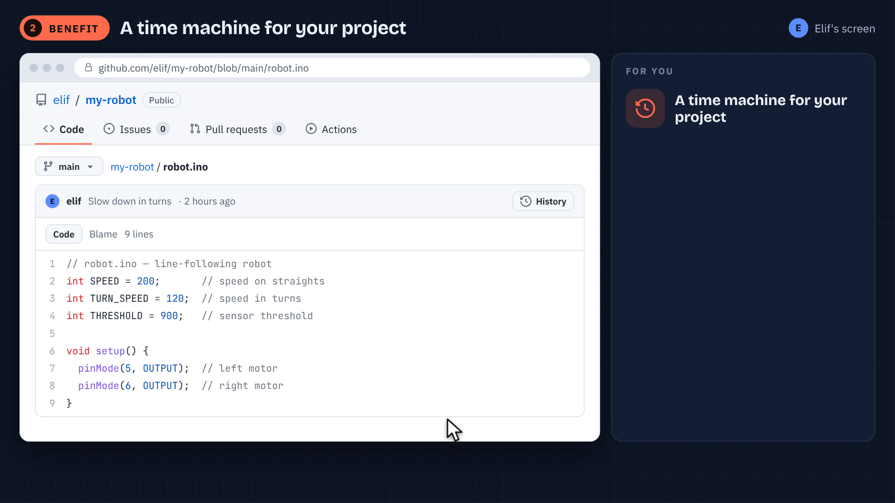
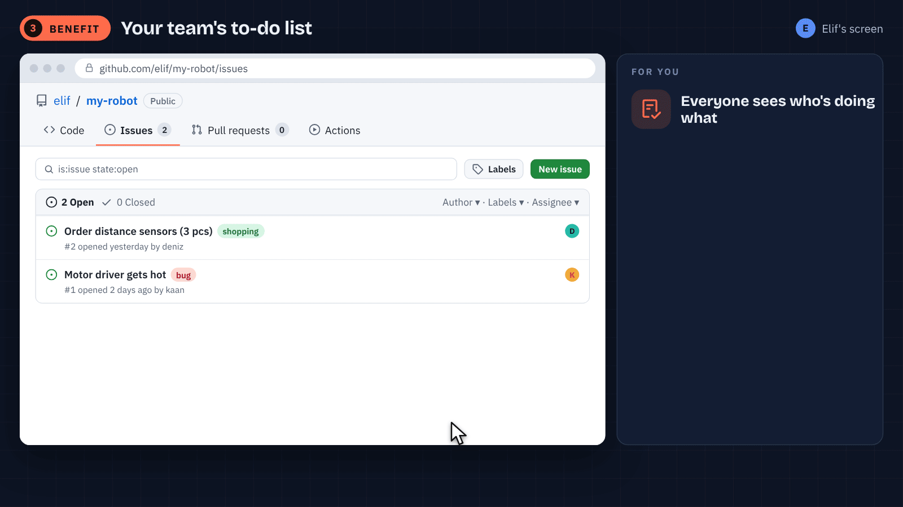
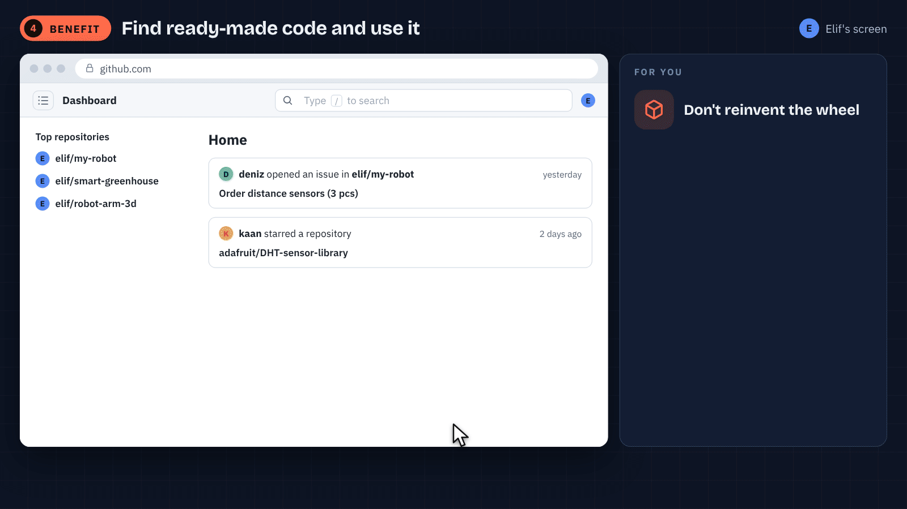
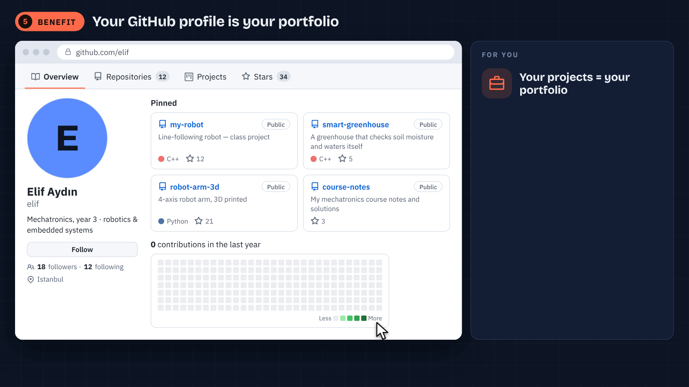
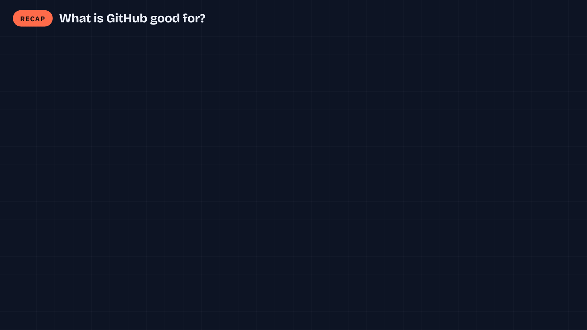

MECHATRONICS · INTRO TO GITHUB · 45 MINUTES
What's GitHub good for?
Never lose a project, work as a team, show what you've built. A lecture with animations and explained examples.
Arif Solmaz · İSTÜN Mechatronics Engineering
TODAY
The plan for 45 minutes
Opening · 7 min
The messy folder, and what GitHub is
Six benefits · 24 min
Each one: animation + explanation
Project walkthrough · 9 min
Connect the ideas through one project
Closing · 5 min
Recap, resources and questions
Follow the project story; no phone, account or installation is required in class.

WHAT IS GITHUB?
An online folder for your projects, and then some
01
A folder
Code, circuit diagram, report, photos: all in one place, online.
02
A time machine
Committed changes enter the history; inspect older commits.
03
A meeting place
Your team's to-do list, and a showcase for what you've built.
No prior coding experience needed: the examples are explained on slides.
GLOSSARY
Four words are enough
repository
your project's folder online
the files + their whole history
commit
a save point
with a short note: what changed?
issue
a task or a bug note
it gets a number: #1, #2…
README
your project's front page
what, why, how: the first thing people read

GitHub contains pushed commits. Local edits do not sync automatically.


History records commits; saving a file is a separate action.


Check the license, hardware, examples and maintenance. Stars do not guarantee quality.

Contribution squares count qualifying activities, not every day worked.
BENEFIT 6 · GITHUB EDUCATION
Explore student benefits
Eligible tools
Available tools depend on the current offer and eligibility.
GitHub Pro
Eligible verified students can access education benefits.
Partner offers
Check current offers, limits and availability.
Apply at education.github.com/pack → verify you're a student (school email or proof of enrollment).
RESOURCES FOR LATER
Keep exploring at your own pace
These are optional resources for after class.
ONE PROJECT, ONE STORY
Read the robot project's journey
- README explains the purpose, parts and wiring.
- Commit records the revised sensor threshold.
- Push makes that commit available on GitHub.
- Issue tracks a task with context and an owner.
- The profile links to the finished, documented project.
A save in the editor, a commit and a push are three different actions.

Online access applies to pushed commits; student benefits depend on eligibility.
OPTIONAL NEXT STEP
Plan a documented project
1
Pick a project
A robot, an assignment or a club project: code, diagram, photo.
2
Write a README
What it does, the parts, how it works, a photo.
3
Choose visibility
Choose a suitable audience and check the repository visibility.
Optional resource: GitHub Skills · Introduction to GitHub, guided independent study · github.com/skills/introduction-to-github
Thank you
repository · commit · issue · README
Questions?